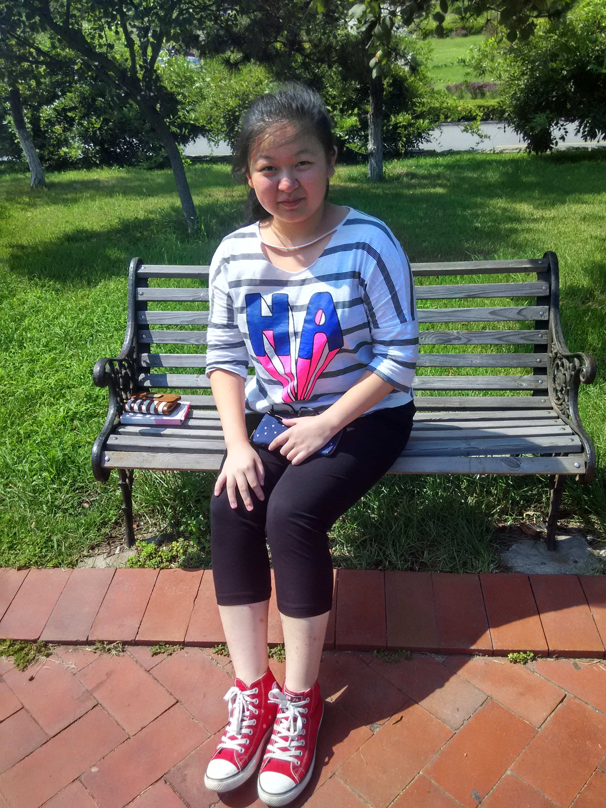

I am a freshman from University of Georgia. However, at the first 18 years of my life, I lived at Qingdao, a coastal city northeast of China. Because I lived in a coastal city in China, so I can swim, and I am good at swimming. At the same time, because the topography is hilly in my home town, I don't know how to ride a bike, though I learned many times. Like most Chinese students, when I was young, my parents let me learn a lot of things, painting, playing the piano. I like playing the piano very much, and my favorite is Sonatina in C major, op. 36 no. 1, by Clementi. After several years, I learned the flute, and be a part of school wind band. Learn and play the music instrument make me more confident, and make more friends. Expect these, travel is also my habit, every summer break I will travel, and in this summer break, I plan to visit my friend in Japan, and go to some country in south Asia. Travel make me more independent, and open my eyes. |  |
Edcation:
|

 |
|

|
{kind=link}
connect me: E-mail